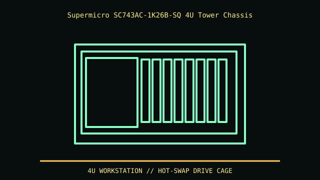

[ MODEL IDENTIFICATION // SC743AC-1K26B-SQ (CSE-743AC-1K26B-SQ) ]
Supermicro SC743AC-1K26B-SQ 4U Tower Chassis
About 452 × 178 × 647 mm (H × W × D); a 4U tower/rack chassis. Weight and service depth vary with power and drive configuration.

REVISION CAVEAT: This exact AC-1K26B-SQ SKU differs from SC743TQ/other SC743 variants in backplane, PSU and acoustics; check CSE label.
Specifications & fit
| Catalog subcategory | Rack server enclosures |
|---|---|
| Model / generation | SC743AC-1K26B-SQ (CSE-743AC-1K26B-SQ) |
| Dimensions / form factor / clearance | About 452 × 178 × 647 mm (H × W × D); a 4U tower/rack chassis. Weight and service depth vary with power and drive configuration. |
| Drive bays | Eight hot-swap 3.5/2.5-inch SAS/SATA positions via specified backplane; three external 5.25-inch bays in this bundle. |
| Compatibility | E-ATX up to 12 × 13 in, ATX and microATX; seven full-height expansion slots. Board and PSU clearances are manual-specific. |
| Revision identification | This exact AC-1K26B-SQ SKU differs from SC743TQ/other SC743 variants in backplane, PSU and acoustics; check CSE label. |
Compatibility & preservation notes
E-ATX up to 12 × 13 in, ATX and microATX; seven full-height expansion slots. Board and PSU clearances are manual-specific.
Preserve trays, key, acoustic panels, fan ducts and rails. Label bay order/controller mapping; heavy carriers and rack rails require careful handling.
- Record the complete model/SKU, serial/date label, board and bay/backplane identifiers, accessories and manual revision before disassembly.
- For servers/workstations, match the exact riser, backplane/controller, drive carrier, PSU and rail kit; a matching 2U/4U height alone does not ensure compatibility.
- Keep original brackets, fasteners, trays, feet and front-panel parts labeled with the chassis. Do not force components into modified or incomplete specimens.
Manufacturer, archive & standards sources
- Supermicro — exact SC743AC SKUPrimary manufacturer or technical-reference source for this named model; use the exact SKU/document revision.
- Supermicro — SC743 chassis manualAdditional manufacturer, archival, or dimensional reference. Options and specimen condition can change fit.
Approximate or convention-dependent dimensions are marked as such. Measure the individual unit for restoration, shipping and installation.